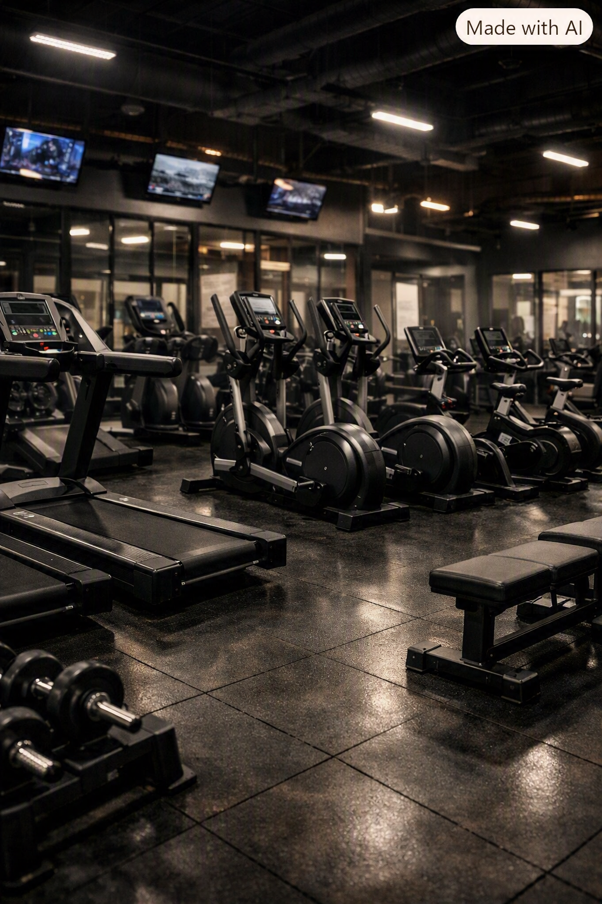
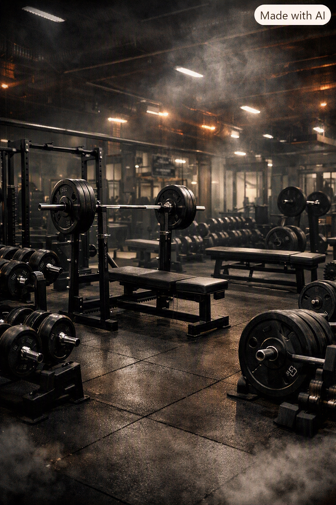
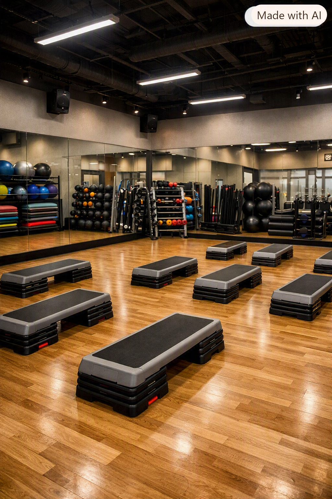

Caminadora
Equipo para entrenamiento cardiovascular y calentamiento.
Conoce algunos de los equipos disponibles para entrenamiento cardiovascular, fuerza y acondicionamiento.

Equipo para entrenamiento cardiovascular y calentamiento.

Equipo destinado al trabajo de fuerza del tren inferior y superior.

Plataformas y accesorios para sesiones de acondicionamiento.